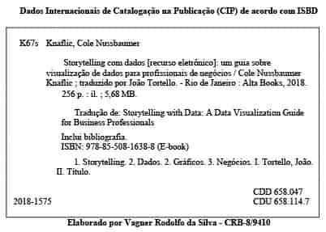

Storytelling com dados: Um guia sobre visualização
Copyright © 2019 da Starlin Alta Editora e Consultoria Eireli.
ISBN: 978-85-508-1638-8
Translated from original Storytelling With Data.
Copyright © 2015 by Cole Nussbaumer Knaflic.
ISBN 978-1-119-00225-3.
Copyright © 2019 by Starlin Alta Editora e Consultoria Eireli.
Impresso no Brasil — 1 Edição, 2016 - Edição revisada conforme o Acordo Ortográfico da Língua Portuguesa de 2009.
Para mais informações, fale com projetos@altabooks.com.br
Formatação e qualidade exclusivas do canal Ebooks Demais
Produção Editorial
Editora Alta Books
Gerência Editorial
Anderson Vieira
Produtor Editorial
Thiê Alves
Assistente Editorial
Illysabelle Trajano
Produtor Editorial (Design)
Aurélio Corrêa
Marketing Editorial
Silas Amaro
marketing@altabooks.com.br
Editor de Aquisição
José Rugeri
j.rugeri@altabooks.com.br
Vendas Atacado e Varejo
Daniele Fonseca
Viviane Paiva
comercial@altabooks.com.br
Ouvidoria
ouvidoria@altabooks.com.br
Equipe Editorial
Adriano Barros
Aline Vieira
Bianca Teodoro
Gabriel Teixeira
Ian Verçosa
Juliana de Oliveira
Kelry Oliveira
Paulo Gomes
Rachel Guarin
Thales Silva
Viviane Rodrigues
Tradução
João Tortello
Revisão Gramatical
Vivian Sbravatti
Wendy Campos
Revisão Técnica
Ronaldo d’Avila Roenick
Engenheiro de Eletrônica pelo Instituto Militar de Engenharia (IME)
Diagramação
Luana Silva

Rua Viúva Cláudio, 291 — Bairro Industrial do Jacaré CEP: 20.970-031 — Rio de Janeiro (RJ)
Tels.: (21) 3278-8069 / 3278-8419
www.altabooks.com.br — altabooks@altabooks.com.br
www.facebook.com/altabooks — www.instagram.com/altabooks